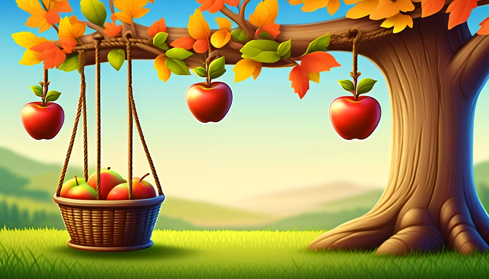

Sixteen hanging-file cards help writers compare two pretend paths, choose one path, write a consequence note, and add a broad file label.
Audience: Families, homeschool groups, tutors, and adult-led writing tables for writers ages 7-11.
Format: 16 printable hanging file story decision-point cards plus adult guide tools, decision-point routines, take-home decision slips, and optional adult prompts
Family-safe printable writing pages for adult-led, offline decision practice.
$89
Included
16 printable hanging file decision point cards
Adult setup guide
Fictional decision-point safety notes
Character choice prompts
Two-path comparison prompts
Compare clue prompts
Chosen path prompts
Consequence note prompts
File label prompts
Six adult-led decision-point routines
Ten take-home decision slips
Adult guide
Decision point coaching
Hanging File Decision Point Adult Guide
Set out one hanging file, blank pages, pencils, and a decision-point card before the adult-led paper start: ____________________.
Choose one fictional character choice and keep every path, clue, and consequence note invented: ____________________.
Move through character choice, path one, path two, clue to compare, chosen path, consequence note, and hanging-file label in order: ____________________.
Keep the adult in charge of the hanging file while the writer writes or dictates short paper lines: ____________________.
Use pretend characters, broad places, and invented actions only; skip real names, real places, and personal facts: ____________________.
Close by reading the chosen path, adding one consequence note, and writing the hanging-file label for later adult-led paper planning: ____________________.
Use one hanging file card at a time. Keep every choice broad, invented, paper-only, and guided by an adult.
World menu
Sixteen decision card worlds
Pick a world image, then compare two fictional paths and choose one consequence note.
Ages 7-9
Acorn Avenue Errand Office
Ages 7-9
Button Bakery Map Mix-Up
Ages 7-8
Mitten Market Lost Ticket
Ages 7-9
Penny Path Compass Shop
Ages 7-9
Spoon Ferry Lunchbox Harbor
Ages 8-10
Compost Clock Workshop

Ages 8-10
Orchard Pulley Post
Ages 8-10
Pantry Measurement Mystery
Ages 8-10
Pond Bridge Blueprint Club
Ages 8-10
Tidepool Timekeepers Lab
Ages 10-11
Almost Invention Workshop
Ages 10-11
Appendix Archive Lab
Ages 10-11
Blue Pencil Observatory
Ages 10-11
Clue Label Tower Museum
Ages 10-11
Margin Note Market
Ages 10-11
Revision River Ferry
Decision point routines
Choose the hanging file routine
short first-page setup
Character Choice Start
Hanging file, blank page, pencil, and character choice slip.
The adult opens the hanging file and points to the character choice blank: ____________________.
The writer names one fictional character for the paper plan: ____________________.
The adult asks what choice is standing in front of that character: ____________________.
The writer writes or dictates one character choice line on paper: ____________________.
The decision point starts with this fictional character choice: ____________________.
first option pass
Path One Fold
Hanging file, current page, pencil, and path one slip.
The adult rereads the character choice line from the page: ____________________.
The writer invents one path the fictional character could take: ____________________.
The adult asks what makes path one clear on paper: ____________________.
The writer writes path one on the slip and places it in the hanging file: ____________________.
Path one gives the character this possible choice: ____________________.
second option pass
Path Two Fold
Hanging file, path one slip, blank path two slip, and pencil.
The adult points from path one to the path two blank: ____________________.
The writer invents a different path the fictional character could take: ____________________.
The adult asks how path two is different from path one: ____________________.
The writer writes path two and tucks it beside path one: ____________________.
Path two gives the character this other possible choice: ____________________.
paper comparison pass
Compare Clue Sort
Hanging file, path one slip, path two slip, clue-to-compare note, and pencil.
The adult lays path one and path two side by side on the table: ____________________.
The writer chooses one clue to compare before a path is picked: ____________________.
The adult asks what the clue shows about each path: ____________________.
The writer writes the clue to compare on the note: ____________________.
The clue to compare says this about the two paths: ____________________.
choice close pass
Chosen Path Slip
Hanging file, two path slips, clue note, chosen path slip, and pencil.
The adult rereads path one, path two, and the clue to compare: ____________________.
The writer picks one chosen path for the fictional character: ____________________.
The adult asks why that path fits the character choice: ____________________.
The writer writes the chosen path on the slip: ____________________.
The chosen path for this decision point is: ____________________.
The adult places the chosen path slip at the front of the hanging file: ____________________.
The writer names one fictional consequence note for that chosen path: ____________________.
The adult asks what hanging-file label will help find this decision point later: ____________________.
The writer writes the consequence note and hanging-file label: ____________________.
The hanging-file label closes this decision point as: ____________________.
Take-home decision slips
Try one decision later
Take-home decision slip
Decision slip 1
Adult: open the hanging file and ask for one fictional character choice: ____________________.
Take-home decision slip
Decision slip 2
Writer: the fictional character choice is: ____________________.
Take-home decision slip
Decision slip 3
Adult: ask what path one could be on the paper plan: ____________________.
Take-home decision slip
Decision slip 4
Writer: path one is: ____________________.
Take-home decision slip
Decision slip 5
Adult: ask what different path two could be: ____________________.
Take-home decision slip
Decision slip 6
Writer: path two is: ____________________.
Take-home decision slip
Decision slip 7
Adult: ask for one clue to compare before choosing: ____________________.
Take-home decision slip
Decision slip 8
Writer: the clue to compare is: ____________________.
Take-home decision slip
Decision slip 9
Adult: reread both paths and ask which chosen path fits the character choice: ____________________.
Take-home decision slip
Decision slip 10
Writer: the consequence note and hanging-file label are: ____________________.
Optional adult prompts
Optional adult-led paper prompt: the fictional character choice is ____________________.
Optional adult-led paper prompt: path one could lead to ____________________.
Optional adult-led paper prompt: path two could lead to ____________________.
Optional adult-led paper prompt: the clue to compare is ____________________.
Optional adult-led paper prompt: the chosen path should be ____________________.
Optional adult-led paper prompt: the consequence note says ____________________.
Optional adult-led paper prompt: the hanging-file label can name ____________________.
Optional adult-led paper prompt: the next decision point can start with ____________________.
Decision Card 1 | Ages 7-9 | name one fictional character choice, two possible paths, one clue to compare, one chosen path, one consequence note, and one hanging-file label for a pretend errand-office scene
Acorn Avenue Errand Office Story Decision Point Card
Acorn Avenue Errand Office
Adult setup: Adult: set out one hanging file, blank page, pencil, and pretend errand-office decision point card beside the writer: ____________________.
Writer: keep the Acorn Avenue helper and every errand office detail invented while you decide between two paper paths: ____________________.
Choice
Choice: name the fictional helper's errand-office choice at the decision point: ____________________.
Path one
Path one: write the first possible paper path the helper could try with the errand note: ____________________.
Path two
Path two: write a different possible paper path the helper could try with the same errand note: ____________________.
Compare clue
Compare clue: write one pretend clue that helps compare the two errand-office paths: ____________________.
Chosen path
Chosen path: choose one path for the helper and write why it fits this made-up errand scene: ____________________.
Consequence note
Consequence note: write one small result note from the chosen errand-office path: ____________________.
File label
File label: write a broad hanging-file label for this Acorn Avenue decision point: ____________________.
Quiet option: fill only the choice, compare clue, and file label blanks before choosing a path later: ____________________. Take-home line: restart this paper decision point later with one pretend Acorn Avenue errand choice: ____________________.
Decision Card 2 | Ages 7-9 | name one fictional character choice, two possible paths, one clue to compare, one chosen path, one consequence note, and one hanging-file label for a pretend button-bakery map mixup
Button Bakery Map Mixup Story Decision Point Card
Button Bakery Map Mix-Up
Adult setup: Adult: place one hanging file, blank page, pencil, and pretend button-map decision point card where the writer can reach them: ____________________.
Writer: invent the button bakery, map marks, and helper choice on paper without using real place details: ____________________.
Choice
Choice: name the fictional helper's choice when two button-map marks point to different ideas: ____________________.
Path one
Path one: write the first possible paper path the helper could follow from the button mark: ____________________.
Path two
Path two: write a second possible paper path that uses a different button-map clue: ____________________.
Compare clue
Compare clue: write one pretend map clue, button color, or label that helps compare the paths: ____________________.
Chosen path
Chosen path: choose one path for the helper and write the reason it fits the map mixup: ____________________.
Consequence note
Consequence note: write one small result note from the chosen button-map path: ____________________.
File label
File label: write a broad hanging-file label for this Button Bakery decision point: ____________________.
Quiet option: draw a tiny button mark, then fill the choice and file label blanks: ____________________. Take-home line: continue this paper decision point later with one pretend button-map choice: ____________________.
Decision Card 3 | Ages 7-8 | name one fictional character choice, two possible paths, one clue to compare, one chosen path, one consequence note, and one hanging-file label for a pretend mitten-ticket scene
Mitten Market Lost Ticket Story Decision Point Card
Mitten Market Lost Ticket
Adult setup: Adult: set one hanging file, blank page, pencil, and pretend mitten-ticket decision point card on the table: ____________________.
Writer: keep the ticket, mitten stalls, and helper made-up while the decision stays paper-only: ____________________.
Choice
Choice: name the fictional helper's choice when the pretend ticket could belong in two places: ____________________.
Path one
Path one: write the first possible paper path for checking the mitten ticket: ____________________.
Path two
Path two: write a second possible paper path for sorting the ticket mixup: ____________________.
Compare clue
Compare clue: write one pretend clue that helps compare the two ticket paths: ____________________.
Chosen path
Chosen path: choose one path for the helper and write why it fits the mitten market scene: ____________________.
Consequence note
Consequence note: write one small result note from the chosen ticket path: ____________________.
File label
File label: write a broad hanging-file label for this Mitten Market decision point: ____________________.
Quiet option: fill only the choice, path one, and file label blanks before adding more: ____________________. Take-home line: start another paper decision point later with one pretend mitten-ticket choice: ____________________.
Decision Card 4 | Ages 7-9 | name one fictional character choice, two possible paths, one clue to compare, one chosen path, one consequence note, and one hanging-file label for a pretend compass-shop decision
Penny Path Compass Shop Story Decision Point Card
Penny Path Compass Shop
Adult setup: Adult: place one hanging file, blank page, pencil, and pretend compass-shop decision point card beside the writer: ____________________.
Writer: invent the compass shop, penny marks, and helper choice while every path stays on paper: ____________________.
Choice
Choice: name the fictional helper's choice when the pretend compass points toward two ideas: ____________________.
Path one
Path one: write the first possible paper path the helper could try with the compass clue: ____________________.
Path two
Path two: write a different possible paper path the helper could try with the penny mark: ____________________.
Compare clue
Compare clue: write one pretend clue that helps compare the compass path and penny-mark path: ____________________.
Chosen path
Chosen path: choose one path for the helper and write why it fits the compass shop scene: ____________________.
Consequence note
Consequence note: write one small result note from the chosen compass-shop path: ____________________.
File label
File label: write a broad hanging-file label for this Penny Path decision point: ____________________.
Quiet option: fill the choice and compare clue blanks, then let the chosen path wait: ____________________. Take-home line: continue this paper decision point later with one pretend compass-shop choice: ____________________.
Decision Card 5 | Ages 7-9 | name one fictional character choice, two possible paths, one clue to compare, one chosen path, one consequence note, and one hanging-file label for a pretend spoon-ferry harbor scene
Spoon Ferry Lunchbox Harbor Story Decision Point Card
Spoon Ferry Lunchbox Harbor
Adult setup: Adult: set out one hanging file, blank page, pencil, and pretend spoon-ferry decision point card: ____________________.
Writer: keep the harbor, spoon ferry, lunchbox tag, and helper choice invented on the page: ____________________.
Choice
Choice: name the fictional helper's choice when the spoon ferry can carry one paper tag first: ____________________.
Path one
Path one: write the first possible paper path the helper could send across the harbor: ____________________.
Path two
Path two: write a second possible paper path the helper could send from another dock mark: ____________________.
Compare clue
Compare clue: write one pretend harbor clue that helps compare the two spoon-ferry paths: ____________________.
Chosen path
Chosen path: choose one path for the helper and write why it fits the harbor scene: ____________________.
Consequence note
Consequence note: write one small result note from the chosen spoon-ferry path: ____________________.
File label
File label: write a broad hanging-file label for this Spoon Ferry decision point: ____________________.
Quiet option: fill the choice, path two, and file label blanks before finishing the rest: ____________________. Take-home line: reopen this paper decision point later with one pretend spoon-ferry choice: ____________________.
Decision Card 6 | Ages 8-10 | name one fictional character choice, two possible paths, one clue to compare, one chosen path, one consequence note, and one hanging-file label for a pretend compost-clock workshop scene
Compost Clock Workshop Story Decision Point Card
Compost Clock Workshop
Adult setup: Adult: place one hanging file, blank page, pencil, and pretend compost-clock decision point card beside the paper: ____________________.
Writer: invent the clock workshop, compost dial, and helper choice while the whole decision stays paper-only: ____________________.
Choice
Choice: name the fictional helper's choice when the compost clock offers two timing ideas: ____________________.
Path one
Path one: write the first possible paper path the helper could try with the clock dial clue: ____________________.
Path two
Path two: write a second possible paper path the helper could try with the compost tag clue: ____________________.
Compare clue
Compare clue: write one pretend workshop clue that helps compare the two clock paths: ____________________.
Chosen path
Chosen path: choose one path for the helper and write why it fits the compost-clock scene: ____________________.
Consequence note
Consequence note: write one small result note from the chosen workshop path: ____________________.
File label
File label: write a broad hanging-file label for this Compost Clock decision point: ____________________.
Quiet option: fill the compare clue and chosen path blanks first, then add the result note later: ____________________. Take-home line: continue this paper decision point later with one pretend compost-clock choice: ____________________.
Decision Card 7 | Ages 8-10 | name one fictional orchard-post character choice, two possible paper paths, one clue to compare, one chosen path, one consequence note, and one hanging-file label
Orchard Pulley Post Story Decision Point Card
Orchard Pulley Post
Adult setup: Adult: set out one hanging file, a blank orchard post page, a pencil, and a file label slip before the decision point starts: ____________________.
Writer: invent an orchard post helper and keep the pulley, message cards, and decision point completely pretend on paper: ____________________.
Choice
Character choice: write the one choice the orchard post helper must make about a pretend pulley note: ____________________.
Path one
Path one: write the first possible paper path the helper could try after reading the pulley note: ____________________.
Path two
Path two: write the second possible paper path the helper could try instead: ____________________.
Compare clue
Compare clue: name one clue the helper can compare before choosing, such as a ribbon mark, branch tag, or pulley arrow: ____________________.
Chosen path
Chosen path: choose which paper path the helper follows and write why it fits the compare clue: ____________________.
Consequence note
Consequence note: write the calm result of that choice on the pretend orchard post page: ____________________.
File label
Hanging-file label: write the short pretend label for this orchard decision point: ____________________.
Quiet option: adult reads the two path lines, and the writer fills only the chosen path blank: ____________________. Take-home line: place the orchard post page in the hanging file with one consequence note ready for later: ____________________.
Decision Card 8 | Ages 8-10 | build a fictional pantry-measurement character choice with two possible paper paths, one compare clue, one chosen path, one consequence note, and one hanging-file label
Pantry Measurement Mystery Story Decision Point Card
Pantry Measurement Mystery
Adult setup: Adult: place one hanging file beside a blank measurement page, a pencil, and a file label strip for the decision point: ____________________.
Writer: make up a shelf helper, a measuring ribbon, and a mystery choice that stays broad, fictional, and paper-only: ____________________.
Choice
Character choice: write the choice the shelf helper faces when two pretend measurement marks seem useful: ____________________.
Path one
Path one: write the first possible paper path, such as checking the tall mark before the short mark: ____________________.
Path two
Path two: write the second possible paper path, such as checking the corner note before the ribbon strip: ____________________.
Compare clue
Compare clue: name the one measurement clue the helper compares before choosing a path: ____________________.
Chosen path
Chosen path: choose one path and explain how the compare clue points that way: ____________________.
Consequence note
Consequence note: write what changes on the pretend measurement page because of the helper's choice: ____________________.
File label
Hanging-file label: write the short pretend label for this measurement mystery decision point: ____________________.
Quiet option: adult points to the compare clue line, and the writer fills only the consequence note blank: ____________________. Take-home line: save the measurement page in the hanging file with the chosen path circled for later: ____________________.
Decision Card 9 | Ages 8-10 | draft a fictional blueprint-club character choice with two possible paths, one clue to compare, one chosen path, one consequence note, and one hanging-file label
Pond Bridge Blueprint Club Story Decision Point Card
Pond Bridge Blueprint Club
Adult setup: Adult: set out one hanging file, a blank blueprint page, a pencil, and a file label slip for the decision point: ____________________.
Writer: invent a blueprint club helper and keep the pretend bridge choice on paper with adult guidance: ____________________.
Choice
Character choice: write the decision the blueprint helper must make about a pretend bridge sketch: ____________________.
Path one
Path one: write the first possible paper path for revising the bridge sketch: ____________________.
Path two
Path two: write the second possible paper path for revising the bridge sketch a different way: ____________________.
Compare clue
Compare clue: name one blueprint clue the helper compares, such as a plank line, dotted mark, or folded corner: ____________________.
Chosen path
Chosen path: choose the paper path that best matches the compare clue and write the reason: ____________________.
Consequence note
Consequence note: write the gentle result that follows from the blueprint helper's chosen path: ____________________.
File label
Hanging-file label: write the short pretend label for this blueprint club decision point: ____________________.
Quiet option: adult circles one blueprint clue, and the writer fills only the chosen path line: ____________________. Take-home line: file the blueprint page with one decision note and one label slip for later paper planning: ____________________.
Decision Card 10 | Ages 8-10 | shape a fictional lab-helper choice by naming two possible paper paths, one clue to compare, one chosen path, one consequence note, and one hanging-file label
Tidepool Timekeepers Lab Story Decision Point Card
Tidepool Timekeepers Lab
Adult setup: Adult: open the hanging file, add a blank lab page, and place a file label strip beside the decision point card: ____________________.
Writer: invent a timekeeper helper, a pretend tidepool chart, and a paper-only decision with no real place details: ____________________.
Choice
Character choice: write the choice the timekeeper helper must make when two pretend chart marks point different ways: ____________________.
Path one
Path one: write the first possible paper path the helper could follow on the tidepool chart: ____________________.
Path two
Path two: write the second possible paper path the helper could follow instead: ____________________.
Compare clue
Compare clue: name one chart clue the helper compares before choosing, such as a shell mark, wave line, or clock dot: ____________________.
Chosen path
Chosen path: choose the chart path that fits the compare clue and write the helper's reason: ____________________.
Consequence note
Consequence note: write the calm result that appears on the pretend lab page after the choice: ____________________.
File label
Hanging-file label: write the short pretend label for this timekeepers lab decision point: ____________________.
Quiet option: adult reads the chart clue, and the writer fills only the path one and path two blanks: ____________________. Take-home line: keep the lab page in the hanging file with the chosen chart path ready to continue later: ____________________.
Decision Card 11 | Ages 10-11 | plan a longer fictional workshop character choice with two possible paths, one clue to compare, one chosen path, one consequence note, and one hanging-file label
Almost Invention Workshop Story Decision Point Card
Almost Invention Workshop
Adult setup: Adult: set one hanging file, a blank workshop page, a pencil, and a file label slip beside the decision point prompt: ____________________.
Writer: invent a workshop helper with a gentle almost-invention and keep the decision point made up on paper: ____________________.
Choice
Character choice: write the decision the workshop helper faces when an almost-invention can be changed two ways: ____________________.
Path one
Path one: write the first possible paper path for adjusting the almost-invention idea: ____________________.
Path two
Path two: write the second possible paper path for adjusting the almost-invention idea: ____________________.
Compare clue
Compare clue: name one workshop clue the helper compares, such as a sketch arrow, gear note, or folded plan tab: ____________________.
Chosen path
Chosen path: choose the path the helper follows and explain how the compare clue supports it: ____________________.
Consequence note
Consequence note: write the result of the chosen path and what the helper understands next: ____________________.
File label
Hanging-file label: write the short pretend label for this workshop decision point: ____________________.
Quiet option: adult points to the two path lines, and the writer fills only the compare clue blank: ____________________. Take-home line: tuck the workshop page into the hanging file with the consequence note facing up for later: ____________________.
Decision Card 12 | Ages 10-11 | name one fictional archive character choice, two possible paper paths, one comparison clue, one chosen path, one consequence note, and one hanging-file label
Appendix Archive Lab Story Decision Point Card
Appendix Archive Lab
Adult setup: Adult: set out one hanging file, blank page, pencil, and this card beside a pretend appendix archive tray: ____________________.
Writer: plan one invented lab character choice on paper and keep every archive detail made up with adult guidance: ____________________.
Choice
Character choice: name the fictional archive helper's choice at the decision point: ____________________.
Path one
Path one: write the first possible paper path through a note stack, appendix tab, or file marker: ____________________.
Path two
Path two: write a different possible path using another tab, margin clue, or archive note: ____________________.
Compare clue
Compare clue: name one small clue that helps compare the two paths without blame or danger: ____________________.
Chosen path
Chosen path: choose the path the helper takes and explain the quiet reason: ____________________.
Consequence note
Consequence note: write what changes in the pretend archive after that chosen path: ____________________.
File label
Hanging-file label: write the broad pretend label for this archive decision point: ____________________.
Quiet option: fill only the character choice, two path names, and file label first: ____________________. Take-home line: keep the page with the hanging file and add one new compare clue later: ____________________.
Decision Card 13 | Ages 10-11 | name one fictional observatory character choice, two possible chart paths, one comparison clue, one chosen path, one consequence note, and one hanging-file label
Blue Pencil Observatory Story Decision Point Card
Blue Pencil Observatory
Adult setup: Adult: place this card, a hanging file, blank paper, and pencil beside a pretend blue-pencil chart: ____________________.
Writer: draft one invented observatory character choice on paper using only made-up chart details: ____________________.
Choice
Character choice: name the fictional chart keeper's choice at the observatory decision point: ____________________.
Path one
Path one: write the first possible path with a blue pencil mark, chart corner, or file tab: ____________________.
Path two
Path two: write a second possible path with a different chart mark or note strip: ____________________.
Compare clue
Compare clue: name one chart clue that helps the keeper compare which path fits better: ____________________.
Chosen path
Chosen path: choose the path the keeper follows and give one calm reason from the clue: ____________________.
Consequence note
Consequence note: write what the chosen path changes on the pretend chart page: ____________________.
File label
Hanging-file label: write the broad pretend label for this observatory decision point: ____________________.
Quiet option: write only the choice, the two path titles, and the file label before adding more: ____________________. Take-home line: tuck the page in the hanging file and add one new chart clue later: ____________________.
Decision Card 14 | Ages 10-11 | name one fictional museum character choice, two possible label paths, one comparison clue, one chosen path, one consequence note, and one hanging-file label
Clue Label Tower Museum Story Decision Point Card
Clue Label Tower Museum
Adult setup: Adult: set out a hanging file, blank page, pencil, and this card beside a pretend tower-museum label stack: ____________________.
Writer: plan one invented museum character choice on paper and keep the tower labels fictional: ____________________.
Choice
Character choice: name the fictional label keeper's choice at the tower museum decision point: ____________________.
Path one
Path one: write the first possible path using a clue label, shelf card, or file tab: ____________________.
Path two
Path two: write a second possible path using a different label order or tower note: ____________________.
Compare clue
Compare clue: name one clue label that helps compare the two possible paths: ____________________.
Chosen path
Chosen path: choose the path the label keeper uses and explain why that clue helped: ____________________.
Consequence note
Consequence note: write what changes in the pretend museum tower after the chosen path: ____________________.
File label
Hanging-file label: write the broad pretend label for this tower museum decision point: ____________________.
Quiet option: fill the choice blank, both path blanks, and one file label before adding the note: ____________________. Take-home line: save the page in the hanging file and add one more clue label later: ____________________.
Decision Card 15 | Ages 10-11 | name one fictional margin-note character choice, two possible note paths, one comparison clue, one chosen path, one consequence note, and one hanging-file label
Margin Note Market Story Decision Point Card
Margin Note Market
Adult setup: Adult: place one hanging file, blank page, pencil, and this card beside a pretend margin-note stall map: ____________________.
Writer: draft one invented note keeper choice on paper with only pretend market and margin details: ____________________.
Choice
Character choice: name the fictional note keeper's choice at the margin-note decision point: ____________________.
Path one
Path one: write the first possible path using a margin note, stall tag, or file divider: ____________________.
Path two
Path two: write a second possible path using a different margin note or paper signal: ____________________.
Compare clue
Compare clue: name one small note clue that helps compare which path matches the story page: ____________________.
Chosen path
Chosen path: choose the note keeper's path and explain the paper clue that made it fit: ____________________.
Consequence note
Consequence note: write what changes at the pretend margin-note market after the chosen path: ____________________.
File label
Hanging-file label: write the broad pretend label for this margin-note decision point: ____________________.
Quiet option: write just the choice, path one, path two, and file label for now: ____________________. Take-home line: place the page in the hanging file and add one extra margin note later: ____________________.
Decision Card 16 | Ages 10-11 | name one fictional ferry character choice, two possible revision paths, one comparison clue, one chosen path, one consequence note, and one hanging-file label
Revision River Ferry Story Decision Point Card
Revision River Ferry
Adult setup: Adult: set out this card, one hanging file, blank page, and pencil beside a pretend revision river ferry chart: ____________________.
Writer: plan one invented ferry character choice on paper and keep every river detail pretend and gentle: ____________________.
Choice
Character choice: name the fictional ferry guide's choice at the revision river decision point: ____________________.
Path one
Path one: write the first possible path using a revision note, ferry tag, or file marker: ____________________.
Path two
Path two: write a different possible path using another paper crossing note or tab: ____________________.
Compare clue
Compare clue: name one revision clue that helps compare the two paths before choosing: ____________________.
Chosen path
Chosen path: choose the path the ferry guide follows and name the clue that tipped the choice: ____________________.
Consequence note
Consequence note: write what changes on the pretend river page after the chosen path: ____________________.
File label
Hanging-file label: write the broad pretend label for this revision river decision point: ____________________.
Quiet option: fill only the choice, two path names, and hanging-file label first: ____________________. Take-home line: keep the page in the hanging file and add one new consequence note later: ____________________.